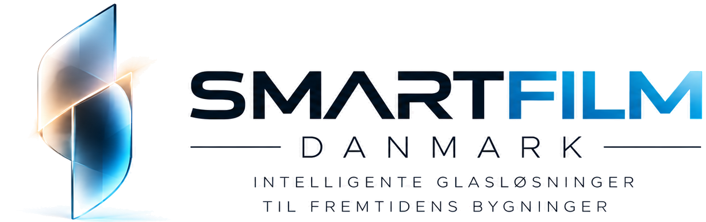
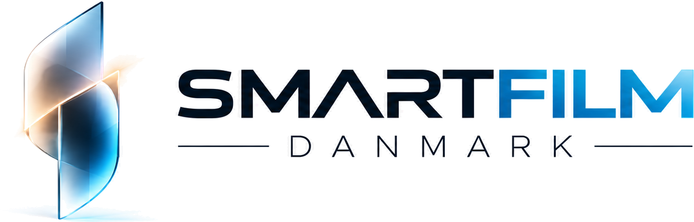
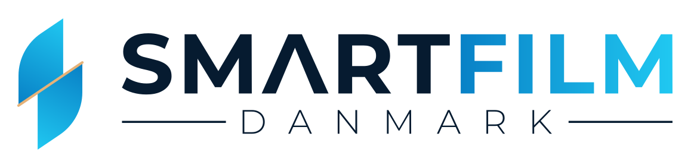
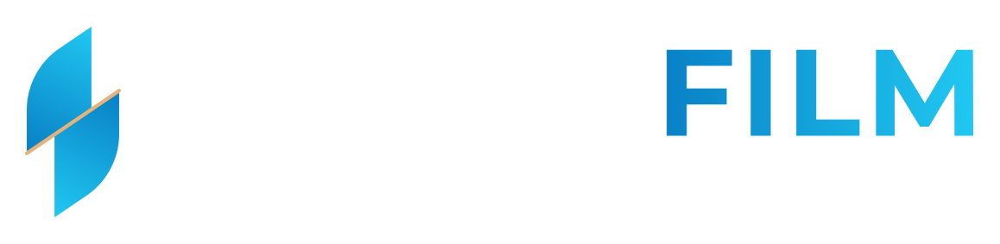
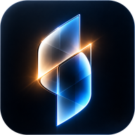
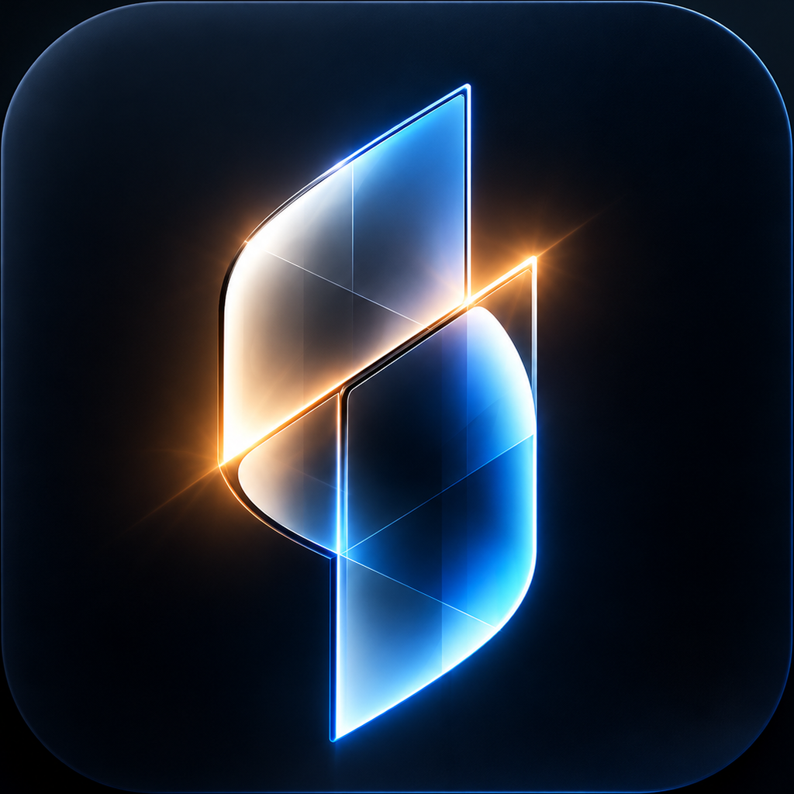
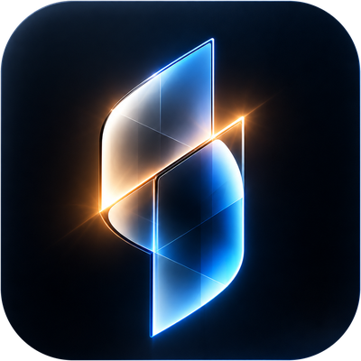
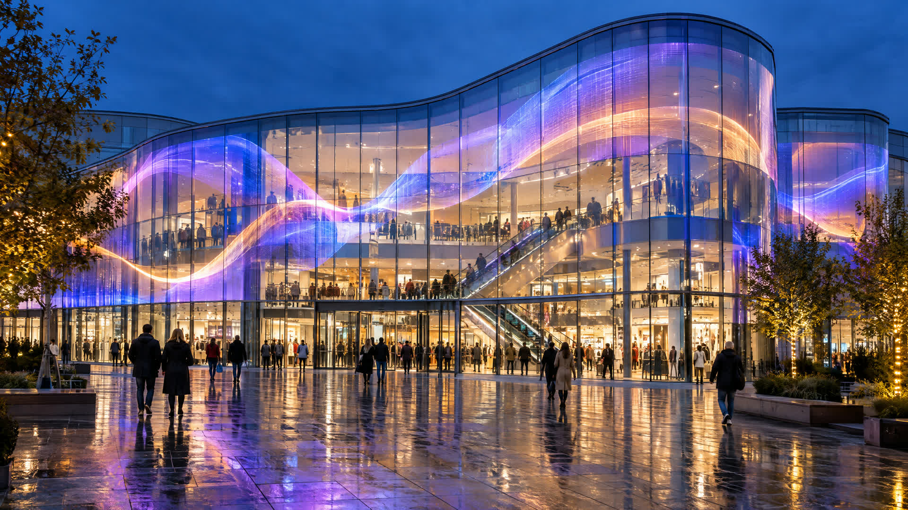

Positionering, principper og den tone, alt vi skriver, skal holde.
Global teknologi. Intelligente løsninger.
SmartFilm Danmark udvælger og bringer innovative internationale glas- og displayteknologier til danske virksomheder. Vi forener transparent LED-film, intelligent glas og digital kommunikation i komplette erhvervsløsninger.
SmartFilms eget logo fra version 1.0, brugt som det er: to glasruder, der mødes på én diagonal og danner et S, med en stribe varmt lys i fugen. Det er en billedfil og leveres som gennemsigtige PNG’er til lys og mørk bund.



Logoet skal have luft omkring sig og må ikke blive så lille, at gløden og de fine linjer i symbolet går tabt.
| Version | Skærm | Tryk |
|---|---|---|
| Primært logo | 180 px bredt | 50 mm |
| Sekundært logo | 140 px bredt | 35 mm |
| Appikon | 48 px | 15 mm |
| Favicon (alternativ, s. 05) | 16–32 px | – |
Under mindstestørrelsen går man ét trin ned: fra primært til sekundært logo, fra logo til appikon. Kun fanebladets favicon bruger den forenklede vektor.
Logoet er en billedfil, op til 1.320 px bred. Det holder til web, præsentationer og tryk i A4. Til skilte, facader og bilfolie skal en designer genskabe det som vektor efter originalen.
SMARTFILM har et åbent A uden tværstreg. Navnet må aldrig sættes som almindelig tekst i stedet for logoet.
En forenklet vektortegning af logoet. Den vises her, så I kender den, men den bruges kun som favicon – i fanebladet og bogmærker, under 48 px, hvor originalens glød bliver til støj. Alle andre steder bruges originalen.
favicon.ico og smartfilm-favicon.svg. Siluetten og guldfugen kan ses helt ned til 16 px.

Logoet må kun bruges fra de leverede filer. Disse ændringer svækker genkendelsen og er ikke tilladt.

22 pxSeks brandfarver fra version 1.0, plus tre arbejdsfarver, der får tekst og knapper til at leve op til tilgængelighedskravene.
Primær mørk bund, tekst på lys bund.
Dybeste bund: forsider, hero, video.
Symbol, ordmærke, grafik og stor tekst.
Accent, links og knapper på mørk bund.
Lyse flader og sektioner.
Kun fugen i symbolet og tynde linjer.
Links og knapper på lys bund (6,0:1).
Sekundær tekst på lys / mørk bund.
Cirka 60 % navy, 28 % hvid og ice, 10 % blå og cyan, højst 2 % guld. Guld er aldrig en flade, knap eller tekst.
Signal Blue → Electric Cyan, venstre mod højre. Bruges i ordmærkets FILM og i symbolet – sparsomt andre steder, aldrig bag brødtekst.
Målt efter WCAG 2.2. Brødtekst kræver mindst 4,5:1 (AA), stor tekst over 24 px eller 19 px fed mindst 3:1.
| Kombination | Eksempel | Kontrast | Brug |
|---|---|---|---|
| Navy på hvid | Aa tekst | 17,4:1 | Al tekst |
| Hvid på Midnight | Aa tekst | 18,9:1 | Al tekst |
| Cyan på Navy | Aa link | 8,8:1 | Links, accenter |
| Midnight på Cyan | Få et tilbud | 9,6:1 | Knap på mørk |
| Hvid på Signal Deep | Få et tilbud | 6,0:1 | Knap på lys |
| Slate på hvid | Aa tekst | 5,5:1 | Sekundær tekst |
| Slate Light på Navy | Aa tekst | 8,0:1 | Sekundær tekst |
| Hvid på Signal Blue | Aa tekst | 4,3:1 | Kun stor tekst |
| Signal Blue på Navy | Aa tekst | 4,0:1 | Kun grafik |
| Cyan på hvid | Aa tekst | 2,0:1 | Aldrig tekst |
| Guld på hvid | Aa tekst | 1,9:1 | Aldrig tekst |
Tryk- og foliefarver (CMYK, Pantone) skal afstemmes med trykkeriet på prøvetryk, før de fastlægges. Skærmværdierne her er udgangspunktet.
Inter er husets skrift på alle digitale og trykte flader. Den er gratis (SIL Open Font License) og findes på Google Fonts.
Tre vægte. Regular 400 til tekst, SemiBold 600 til mellemoverskrifter og knapper, Bold 700 til store overskrifter.
Sætning, ikke versaler. Overskrifter skrives med stort begyndelsesbogstav. Versaler kun i korte etiketter.
Erstatning. Hvor Inter ikke kan installeres: Arial eller systemets sans-serif. Montserrat bruges kun inde i logoet.
Appikonet fra version 1.0 – det glødende glassymbol på en mørk, afrundet flade – bruges fra 48 px og op. Under 48 px bliver gløden til støj, så faneblad og bogmærker får en forenklet udgave.


favicon.ico og smartfilm-favicon.svg.Reglen: 48 px og op → appikonet. Under 48 px → det forenklede favicon. Appikonet er den oprindelige billedfil (1254 px). Den kan ikke skaleres op over 1024 px uden tab; skal den bruges større – fx på facade eller bil – bruges glassymbolet som vektor (smartfilm-mark-glass-dark.svg) på en Midnight-flade.
Grundværdierne til webbureauet. Mørk navy er hovedtemaet; Ice White er den lyse sektion.
:root {
--sf-navy: #061B30;
--sf-midnight: #07111F;
--sf-signal: #087FC5; /* grafik, stor tekst */
--sf-signal-deep: #0667A3; /* links, knapper på lys */
--sf-cyan: #20C8F1; /* links, knapper på mørk */
--sf-ice: #EAF6FC;
--sf-gold: #E6B278; /* kun linjer */
--sf-slate: #5B6B7E;
--sf-slate-light: #9FB2C6;
--sf-gradient: linear-gradient(90deg,
#087FC5, #20C8F1);
--sf-font: Inter, Arial, sans-serif;
--sf-radius: 10px;
--sf-radius-card: 18px;
--sf-ease: cubic-bezier(.16, 1, .3, 1);
}
Produktet findes først for alvor, når glasset er tændt. Billederne viser derfor arkitektur i skumring og glas i brug.

Logoet og appikonet er SmartFilms originale grafik, skåret fri som gennemsigtige PNG’er. Vektorudgaven (side 05) er et alternativ, der kun bruges til favicon.
png/logo-pdf-light-tagline.pngPrimært logo, lys bundpng/logo-pdf-dark-tagline.pngPrimært logo, mørk bundpng/logo-pdf-light.pngSekundært logo, lys bundpng/logo-pdf-dark.pngSekundært logo, mørk bundpng/appicon-1024.pngApp-ikon, fuld firkantpng/icon-1024.png · -512 · -192Appikon, gennemsigtige hjørnerpng/apple-icon-180.pngiPhone-hjemmeskærmpng/social-profile-400.pngProfilbilledesvg/smartfilm-favicon.svgpng/favicon.ico · favicon-16/32/48.pngFavicon, 16–48 pxsvg/smartfilm-logo-*.svg · svg/smartfilm-mark-*.svgpng/logo-*-2400.pngVektorudgaven, til orientering